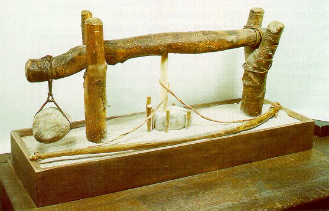

LMP>Linhas de Pesquisa>DUECO>Desenvolvimento de Estudos no Processo de Furação
INTRODUÇÃOA operação de furação
é um dos processos de fabricação mais antigos utilizados
pelo homem. Na idade da pedra utilizou-se silex e ossos como ferramentas
em uma espécie de furadeira manual (figura) que dependia principalmente
da habilidade de seu executor. Também existem registros que indicam
que esta foi uma das primeiras operações executadas em metal. O grupo de estudos em furação atua no LMP desde 1990, onde continuamente tem desenvolvido pesquisa nesta importante operação. Neste período foram gerados diversos trabalhos de mestrado e inúmeros estudos específicos para empresas conveniadas, o que resulta em um bom acervo de conhecimentos neste tema. OBJETIVOSA manutenção da pesquisa nesta área visa melhorar a eficiência tecnológica e econômica do processo de furação, fornecendo suporte técnico aos atuais processos produtivos. Também busca-se o desenvolvimento de novas tecnologias que possam suprir as necessidades dos processos de fabricação, cada vez mais exigentes. DESENVOLVIMENTO DA PESQUISAForam desenvolvidos estudos de fundamentação do processo, gerando conhecimentos básicos e domínio dos parâmetros de processo. Atualmente o grupo está direcionando
seus estudos em novas alternativas tecnológicas para manter ou melhorar
a eficiência da operação satisfazendo as exigências
ecológicas impostas pelos órgãos ambientais. Em outras
palavras, os estudos estão sendo direcionados no sentido de reduzir
o impacto ambiental deste processo, mantendo e/ou melhorando os atuais
índices de eficiência do processo.

|
| Contato:
DUECO Rolf Bertrand Schroeter Prof. Dr. Eng. |
Última Atualização 18.05.2006 |